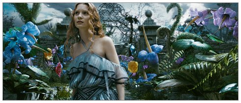
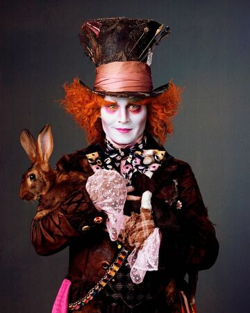

2.) Alice in Wonderland (Live-action 2010)
Ik vind
Het verhaal
Alice
- Volledige naam: Alice Kingsleigh
- Roepnaam: Alice
- Over: Hoofdpersoon uit de film. Alice is een nieuwschierige en fantasierijke jonge vrouw, die het moeilijk vind om de waarden van de samenleving waarin ze leeft te beseffen. 
vaerhguveirbnvuerhkhwuefhbejwhgfqyegbcfegwyuafgewhufbewhfve egkfweyue54rstjhteje5ujrdtuj6rk56erj65j65uj65j65ekj7tok76ij54uy6iu76k7k6j65e6ij76i76rikrke6
Mad hatter
- Volledige naam: Tarrant Hightopp 
- Roepnaam: Mad Hatter/The Hatter (NL: hoedenmaker)
- Eigenschappen: Wanneer hoedenmaker van streek raakt, veranderen zijn ogen van groen in goudgeel, ook kan hij soms erg gewelddadig worden.
- Over: Hoedenmaker in de film. Hij is vergiftigd door kwik, vandaar zijn oranje haar. Hij maakt deel uit van het verzet tegen de dicatuur van de Rode Koningin, koningin van het fictive land 'Underland'.
trj67kjrje5j5rkjutykjyrtjyik878k7ujh6rj5kr6jyyehgrewhtuj6rkm7kuj46ei5u7oipluytejnyjiutilkuykyt